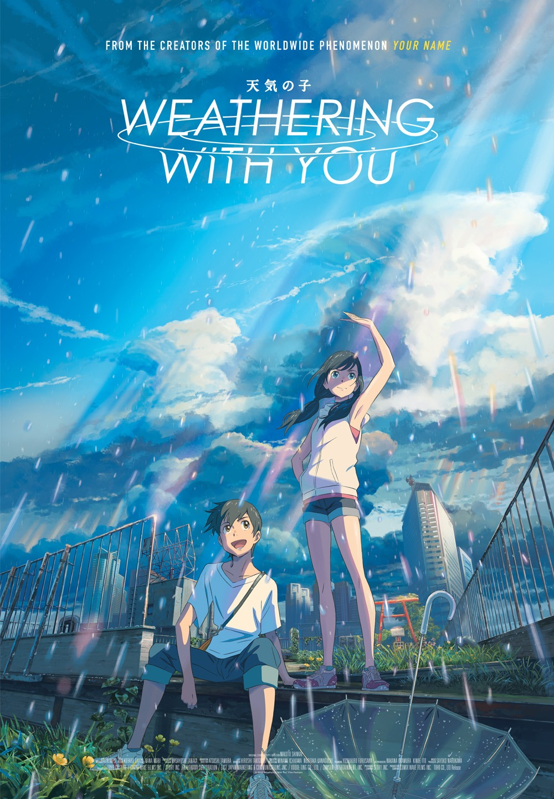

WandaVision is my top one favorite series.
It is an American web television miniseries, based on the Marvel Comics superheroes Scarlet Witch (Elizabeth Olsen) and Vision (Paul Bettanny).
The series is a sequel to Avengers: Endgame.
It is the first installment and the first television series of Phase Four of the Marvel Cinematic Universe.
The series is produced by Marvel Studios and was released on Disney+.
Throughout her life story, Wanda has been made to suffer great losses.
Avengers: Age of Ultron took her brother Pietro, and Avengers: Infinity War saw her lovely Vision ripped from her,
much like the Mind Stone was ripped from his head by Thanos (Josh Brolin).
While she came back from The Blip in Avengers: Endgame and totally walloped Thanos,
apparently that wasn’t enough closure to give her peace.
Which, most likely, has led to WandaVision’s amazing tale of loss, coping and American sitcom history.
I love this series because in not only deals with powers and superheroes but it talks about depression and grief.
Just like I said, Wanda suffers great losses throughout time and she want to alternate the reality.
Wanda explored the five stages of grief: denial, anger, bargain, depression, and acceptance.
Wanda used her favorite TV shows as an escape from reality and it’s so personal to me.
Most of us cant accept when someone is finally gone in our life and it takes time to recover.
Like Wanda she can't accept that her beloven one is totally gone so she need time to heal.
Also, this series focuses on how Scarlet Witch is born.
I recommend this series for everyone because it is so good.
Umbrella Academy
The Umbrella Academy is set in a universe where 43 women around the world give birth simultaneously on October 1, 1989
despite none of them showing any sign of pregnancy until labor began.
Seven of the children are adopted by eccentric billionaire Sir Reginald Hargreeves and turned into a superhero team that he calls "The Umbrella Academy."
Hargreeves gives the children numbers rather than names, but they eventually are named by their robot-mother, Grace, as
Luther, Diego, Allison, Klaus, Five, Ben, and Vanya. While putting six of his children to work fighting crime, Reginald keeps Vanya apart from her siblings'
activities, as she supposedly demonstrates no powers of her own.
The second season takes place immediately after the first season.
Following their failure to stop the apocalypse, the Umbrella Academy is forced to go back in time, to save the world.
Unfortunately the time travel goes awry as the siblings end up different years in 1960s Dallas.
Five ends up on November 25, 1963, in the middle of a nuclear doomsday, but manages to escape with the help of Hazel.
Five discovers that another apocalypse is coming and that he only has ten days to prevent it.
While being hunted by a trio of Swedish assassins, Five must find and reunite his siblings who have made new lives following their arrival,
in order to stop this new apocalypse.
Movies
All the Bright Places
The Netflix adaptation of "All the Bright Places," is one of the greatest film I've ever watched.
It is a wonderfully bittersweet novel written by Jennifer Niven, follows two young adults in their journey of loss and love in the 21st century.
The film highlights the unlikely relationship between misfit Theodore Finch (Justice Smith) and sociable-turned-quiet Violet Markey (Elle Fanning),
after the passing of her sister in a traumatic car accident.
Finch and Markey find themselves on a journey exploring the ins-and-outs of the seemingly mundane state of Indiana for a school project,
but along the way learn to discover the beauty in the small and unexpected things in life.
The movie is not all sunshine and butterflies though, as it touches on Markey’s loss and trauma,
as well as Finch’s deteriorating mental health characterized by what he calls “dark moods.”
The movie eloquently dances around the topic of mental health, making sure to include the realness
and raw emotions that come with all of the aforementioned loss and trauma,
yet does not overstep itself in the way Netflix did while producing “13 Reasons Why.”
It provides realistic insight to what it means and what it is like to be a teenager today,
and what it is like to struggle with mental illness; it isn’t black and white,
happiness exists among depression, and there isn’t a clear cut way to handle all of that.
Weathering With You

Weathering With You (Japanese: 天気の子, Hepburn: Tenki no Ko, lit. "Child of Weather") is a 2019 Japanese animated romantic fantasy film
produced by CoMix Wave Films and released by Toho. It depicts a high school boy who runs away from his rural home to Tokyo
and befriends an orphan girl who has the ability to manipulate the weather.
Weathering With You wields a message about facing life’s challenges and finding inner strength through its myriad characters.
Many of their struggles, be it looking for work or trying to adapt to a new place, are achingly relatable.
Because of this, these themes find Weathering With You leaning harder on a sense of realism compared to the more supernatural elements of Your Name.
Of course, when you have a sunshine girl like Hina around, things aren’t so grounded, but even with her extraordinary abilities,
the film’s messages feel more organic than usual.